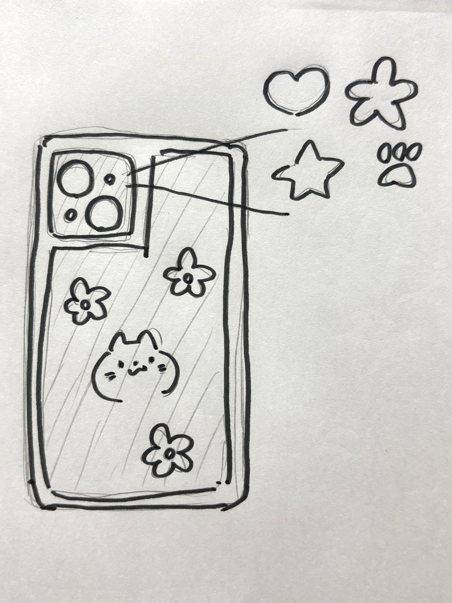
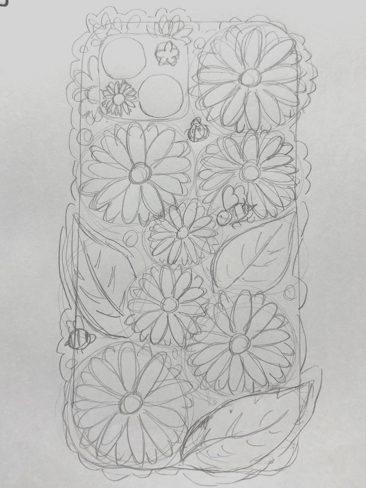

花柄スマホケース
完成品

作品説明
花や蝶などが彫刻してあるパーツを市販のスマホケースと組み合わせた作品。ライトの部分が花型にカットしてあり、ライトをつけると花型に光る。フラッシュ撮影でもきれいに花型に写る。
スマホケースとしての実用性より、心を動かせるようなデザイン性を意識して制作した。花型に光るライトは照らすことができる範囲が狭くなるし、花や蝶のパーツは少しはみ出ているため持ちにくさを感じるかもしれない。しかし、この不便さも含めて魅力的に感じてもらえたら嬉しい。
使用したスマホケースはseriaで購入した。対応機種：iPhone15
スケッチ


ただのスマホケースだけでは面白くないと思い、スマホライトの光る形を変えることができないかと考えた。スマホのライトは光が直線ではなく広がって光るため、肉球はパーツがはっきりせず、星は角がはっきりしないと思った。
そのため、ハートと花で迷ったが今回は花型に挑戦することにし、それに合わせてスマホケースのデザインを行った。
制作過程

細かいデザインにしたため、大学のPCのIllustratorでは制作が間に合わないと思い、別の方法で線画を作り、llustratorで画像をトレースすることにした。既存の製品にぴったりと合うように線画を作りたかったため、紙ではなくiPadを使いibisPaintXというアプリでiphoneの画像を挿入しその上に線画を作った。
Illustratorで画像をトレースする際、トレースしたい画像の線が細すぎるとIllustratorが線として認識しなかったため調整をした。
スケッチ段階ではパーツごと分けない予定だったが、分けた方が彫刻がはっきりするし、スマホ本体の色も見えてより魅力的なデザインになると思いデザインを変更した。


このデザインでは彫刻をしたい部分とカットをしたい部分が混ざっておりIllustrator上で選択することが大変だった。そのため、カットしたい部分と彫刻したい部分で分けて線画を作り直し、Illustratorではレイヤーを分けて操作をし、線の色や太さを調整をした。

レンズカバーのライト部分はibisPaintXで描いたものは細かすぎたのか歪な花型になってしまった。花びら5枚を角度や形を正確に描くことが難しかったため、ここではfusionを利用し、大きさの調整や編集はIllustratorで行った。
svgファイル